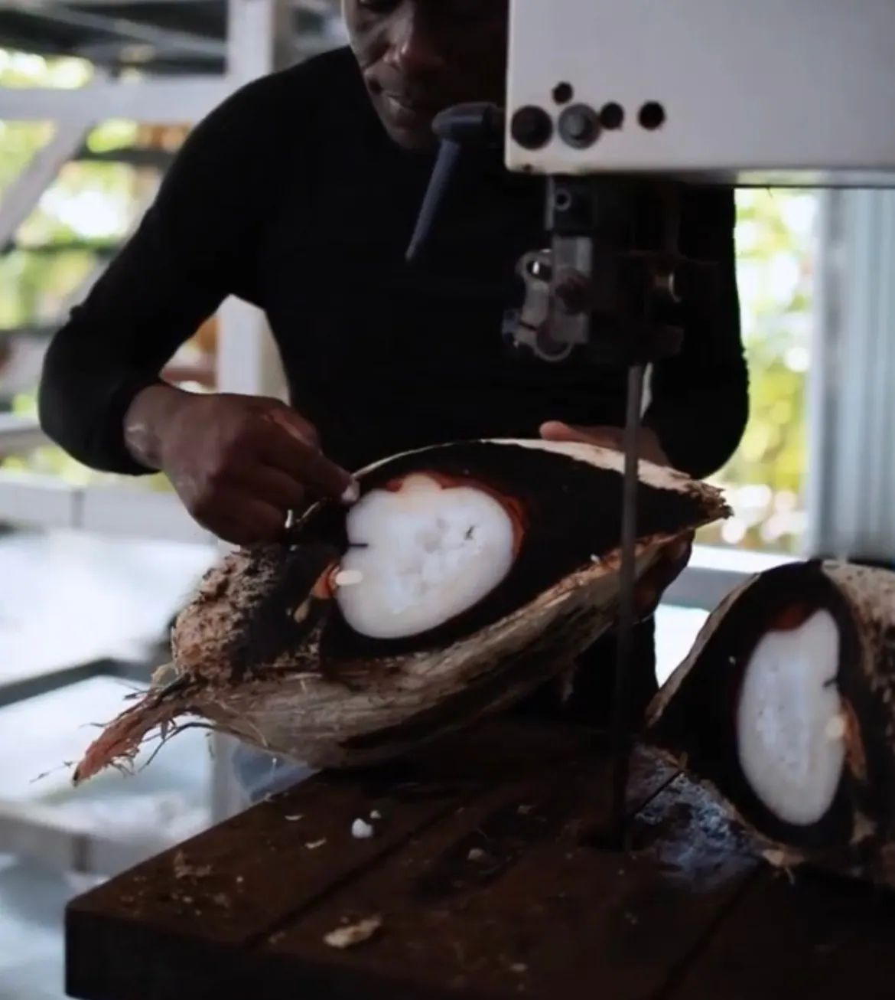
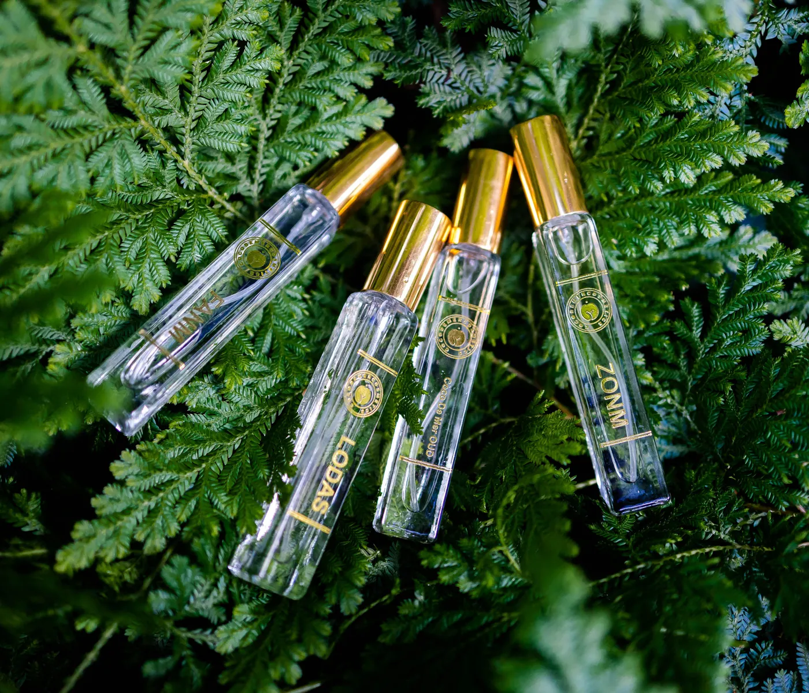
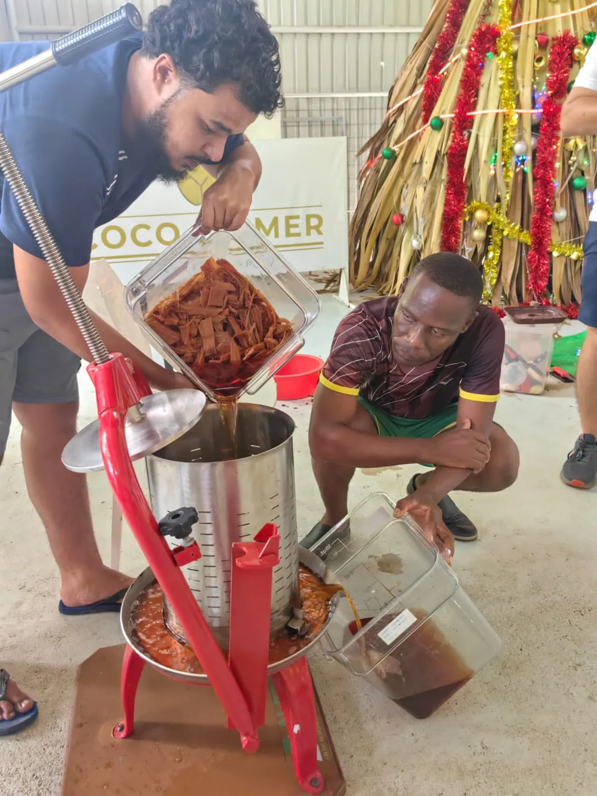
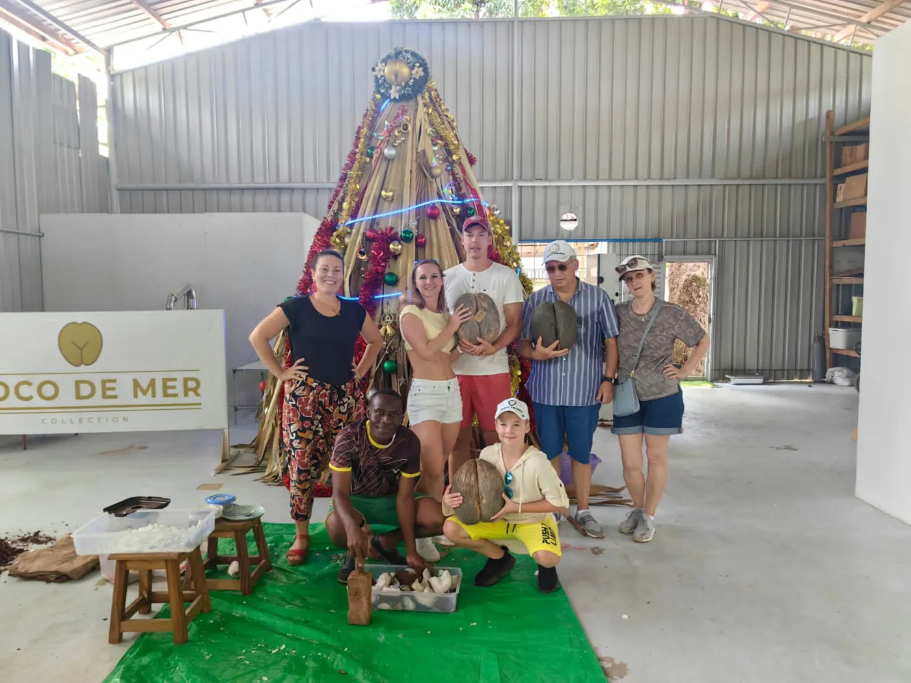

A Once-in-a-Lifetime Experience You Can't Miss

Nestled in the pristine beauty of the Seychelles archipelago lies an enchanting destination that encapsulates the essence of luxury and natural marvels—the Coco de Mer and the experience of a lifetime.
Tucked away in the heart of this tropical paradise, you will find the Domaine de Val de Pres, which is where our factory is. We offer visitors an immersive experience into the world of the extraordinary Coco de Mer palm and its exquisite products.
Upon arrival, visitors are greeted by the lush greenery that surrounds the factory, a testament to the rich biodiversity of the Seychelles and our friendly staff. The journey begins with a guided tour through the expansive factory premises, where one can witness the meticulous process of creating perfumes and products derived from the famed Coco de Mer.

As you step into the factory, the air is filled with an aromatic symphony—a blend of sweet, earthy notes that emanate from the perfumes created on-site. The knowledgeable guides walk you through the various stages of perfume-making, from the careful extraction of oils to the artful blending of ingredients. Visitors get a firsthand look at the craftsmanship behind each bottle, witnessing the delicate balance of science and artistry.
A highlight of the tour is the visit to the kernel and the perfume laboratory, where everything is meticulously handcrafted. Here, the iconic Coco de Mer kernel—the largest seed in the plant kingdom—is showcased, revealing its intriguing shape and enigmatic allure. Visitors gain insight into the intricate process of transforming this kernel into a range of luxurious products, like our fine fragrances.
The fragrance laboratory is a haven for olfactory enthusiasts, offering an opportunity to engage with an array of scents meticulously crafted from indigenous Seychellois botanicals. Visitors are encouraged to sample and explore the diverse perfumes, each carrying The Essence of the Seychelles—a harmonious blend of floral, fruity, and woody notes that captivate the senses.

Amidst this sensorial journey, guests are invited to indulge in the exquisite Coco de Mer tea—a rare and delightful brew made from the leaves of this iconic palm.
Sipping on this aromatic infusion, visitors can immerse themselves further in the cultural significance of the Coco de Mer, while learning about its history and the traditions that surround it.
Beyond the fragrant allure, the tour offers a wealth of knowledge about the Coco de Mer—its biology, conservation efforts, and the significance it holds in Seychellois culture and folklore.
Visitors leave not only with beautifully crafted souvenirs but also with a deeper appreciation for this remarkable palm and its role in the ecosystem.

The Coco de Mer Factory experience transcends the ordinary, inviting guests into a realm where nature's marvels and human ingenuity converge. It's a journey that tantalizes the senses, educates the mind, and leaves an indelible impression—a testament to the Seychelles' commitment to preserving its natural heritage while sharing its treasures with the world.
We know a visit to the Coco de Mer Factory in Seychelles promises an immersive and unforgettable experience, where the allure of fragrances, the mystique of the Coco de Mer kernel, and the beauty of nature intertwine, leaving visitors with memories to cherish and stories to share for a lifetime.